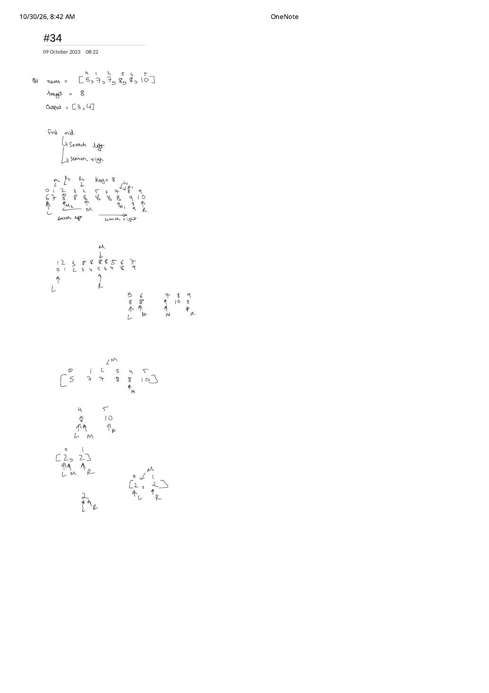

LC 34: Find First and Last Position of Element in Sorted Array
Expanded from handwritten competitive coding study note: 06_34.pdf
1. Problem Statement & Constraints
Given an array of integers nums ($0 \le n \le 10^5$, $-10^9 \le \text{nums}[i] \le 10^9$) sorted in non-decreasing order, find the starting and ending position of a given target value in strict $\mathcal{O}(\log n)$ runtime complexity. If target is not found, return [-1, -1].
- Example (Top of
06_34.pdf):nums = [5, 7, 7, 8, 8, 10],target = 8$\longrightarrow$[3, 4].
2. Brute $\to$ Outward Walk Trap $\to$ Dual Monotonic Binary Search
- Brute Force Linear Scan ($\mathcal{O}(n)$): Scan left-to-right for the first index equal to
targetand right-to-left for the last index. Violates the $\mathcal{O}(\log n)$ requirement. - The Outward-Walk Trap ($\mathcal{O}(\log n)$ average, $\mathcal{O}(n)$ worst case): Run one standard binary search to hit some
midwithnums[mid] == target, then walki--andj++outward while equal totarget. Look at the long plateau drawn in the middle of06_34.pdf:[6, 7, 8, 8, 8, 8, 8, 8, 9, 10]! When all $n$ elements equal8, walking outward visits every element and degrades to $\mathcal{O}(n)$! - Optimal — Two Independent Boundary Binary Searches ($\mathcal{O}(\log n)$ worst case): As diagrammed on
06_34.pdf(Find mid → Search left / Search right), don't stop whennums[mid] == target! Recordans = midas the best index seen so far and keep bisecting:- Left Boundary (First Occurrence): On
nums[mid] == target, saveans = midand squeeze left viaR = mid - 1. - Right Boundary (Last Occurrence): On
nums[mid] == target, saveans = midand squeeze right viaL = mid + 1.
- Left Boundary (First Occurrence): On
3. Why the Handwritten [2, 2] Trace Is the Ultimate Binary Search Litmus Test
At the very bottom of 06_34.pdf, we specifically dry-run the 2-element array nums = [2, 2] ($L = 0, R = 1$). Every binary-search infinite loop bug ever written crashes on a 2-element array!
The Half-Closed Midpoint Trap on [2, 2] vs. the Candidate-Variable Pattern
Suppose you try to find the rightmost 2 in [2, 2] using while (L < R) and update if (nums[mid] <= target) L = mid; with standard floor midpoint mid = L + (R - L) / 2:
- When $L = 0, R = 1$, floor division computes $\text{mid} = 0 + \lfloor 1 / 2 \rfloor = 0$.
- Since
nums[0] == 2, settingL = midassignsL = 0again—$[0, 1]$ never shrinks and loops forever! (Fixing that style requires ceiling midpointL + (R - L + 1) / 2.)
By contrast, using closed interval while (L <= R) + saving ans = mid updates L = mid + 1 = 1 on [2, 2], then L = 2 > R = 1 on the next step—shrinking $[L, R]$ by at least $1$ element on every single branch with zero midpoint-rounding tricks!
8s spans almost the entire array, both boundary binary searches finish in $\lceil \log_2 10 \rceil = 4$ probes.4. Clean C++ & Python Implementations
// LC 34: Find First and Last Position of Element in Sorted Array — O(log n) Time, O(1) Space
#include <algorithm>
#include <vector>
using namespace std;
class Solution {
int findBound(const vector<int>& nums, int target, bool findFirst) {
int L = 0, R = (int)nums.size() - 1, ans = -1;
while (L <= R) {
int mid = L + (R - L) / 2;
if (nums[mid] == target) {
ans = mid;
if (findFirst) R = mid - 1; // Squeeze left for first index
else L = mid + 1; // Squeeze right for last index
} else if (nums[mid] < target) {
L = mid + 1;
} else {
R = mid - 1;
}
}
return ans;
}
public:
vector<int> searchRange(vector<int>& nums, int target) {
int first = findBound(nums, target, true);
if (first == -1) return {-1, -1}; // Early exit: target absent!
int last = findBound(nums, target, false);
return {first, last};
}
// STL One-Liner Alternative via lower_bound / upper_bound
vector<int> searchRangeSTL(const vector<int>& nums, int target) {
auto it1 = lower_bound(nums.begin(), nums.end(), target);
if (it1 == nums.end() || *it1 != target) return {-1, -1};
auto it2 = upper_bound(it1, nums.end(), target);
return {int(it1 - nums.begin()), int(it2 - nums.begin()) - 1};
}
};from bisect import bisect_left, bisect_right
class Solution:
def searchRange(self, nums: list[int], target: int) -> list[int]:
first = bisect_left(nums, target)
if first == len(nums) or nums[first] != target:
return [-1, -1]
last = bisect_right(nums, target, lo=first) - 1
return [first, last]5. Complexity Proof & Key Edge Cases
- Time Complexity — $\mathcal{O}(\log n)$: At most two binary searches, each halving $[L, R]$ in $\le \lfloor \log_2 n \rfloor + 1 \le 17$ iterations for $n \le 10^5$ (and only one search when
targetis missing!). - Space Complexity — $\mathcal{O}(1)$: Constant pointer state (
L,R,mid,ans). - Key Edge Cases:
- Empty array
nums = []:R = -1,L = 0 <= -1is immediatelyfalse, returning[-1, -1]. - Single-occurrence target (e.g.
[5, 7, 8],target = 7): Both left and right searches return index1$\to$[1, 1]. - 2-element uniform array
[2, 2],target = 2: Returns[0, 1]without looping infinitely.
- Empty array
From the Handwritten Notes
View original handwritten page — 06_34.pdf (Left/right mid splits, plateau trace & [2, 2] midpoint check)


06_34.pdf: Splitting search left and search right around mid on [5, 7, 7, 8, 8, 10], plateau [6, 7, 8..8, 9, 10], and 2-element boundary [2, 2].